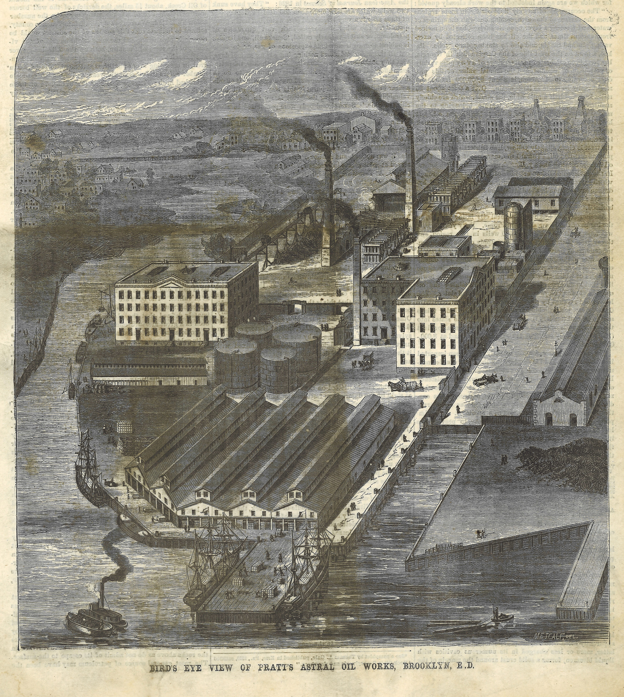

Gas + Petroleum
Petroleum
Charles Pratt's Astral Oil kerosene distillery was founded on the south side of Bushwick Inlet in about 1860. Pratt soon sold his company to John D. Rockefeller's Standard Oil Company, in the process becoming one of the richest Americans of his age. Pratt's legacy lives on in philanthropic endeavors such as Pratt Institute and the Astral Apartments in Greenpoint (built by Pratt as a limited-dividend development to improve the quality of housing for his workers), but it also lives on in the ground contamination of the Bayside site at Bushwick Inlet Park. The Pratt Bushwick Inlet site was operated by Standard Oil through the 1930s, and then by Texaco and eventually as a home heating oil storage depot for Bayside Oil. This Bayside parcel of the Park, 8 acres in total, is currently undergoing testing for future remediation. The parcel will need to be remediated before design and construction can be undertaken. None of this work is currently funded, and assuming it is funded, the work is expected to take a decade or more.


Coal-tar Gasification

Another major source of contamination at the inlet was manufactured gas. In the mid to late 19th century coal-tar gas provided illumination and fuel for cooking to the City's residents. The coal-tar distillation process required tons of coal per day, which in turn meant that coal-tar plants had to be located where they could get easy access to coal. The north Williamsburg waterfront — long since expanded with landfill into the East River — was one such location. In the early 1850s, the Williamsburg Gas Light Company was established on the block between North 10th and North 11th Streets. Other manufactured gas plant (MGP) in the area included the block of Berry Street between North 12th and North 13th Street (to the west of the asphalt softball field at McCarren Park, now partly occupied by the William Vale Hotel). The Williamsburg Gas Light Company eventually became part of Brooklyn Union Gas — whose headquarters was in a grand cast-iron building at South 2nd and Bedford.

The newly opened park parcel at 50 Kent once housed large gas holding tanks that were part of the Williamsburg Gas Company operation, resulting in contamination that extended more than 20 feet below the surface. Contamination from this site is also believed to have leached under adjacent parcels. 50 Kent was remediated by National Grid (the successor firm to Williamsburg Gas and Brooklyn Union Gas) in 2017. In 2018, the Parks Department approved a design for this parcel, designed by Abel Bainnson Butz and construction was completed in 2022. The western parcel on this block was also part of the gas works and was used for storing and unloading coal and other operations — less contaminating, but by no means clean.